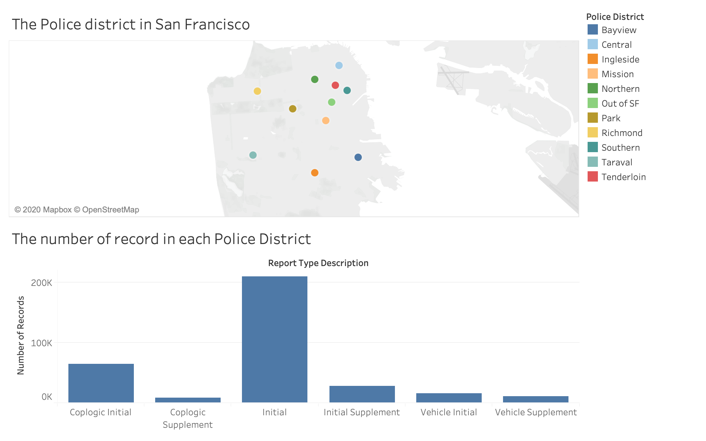
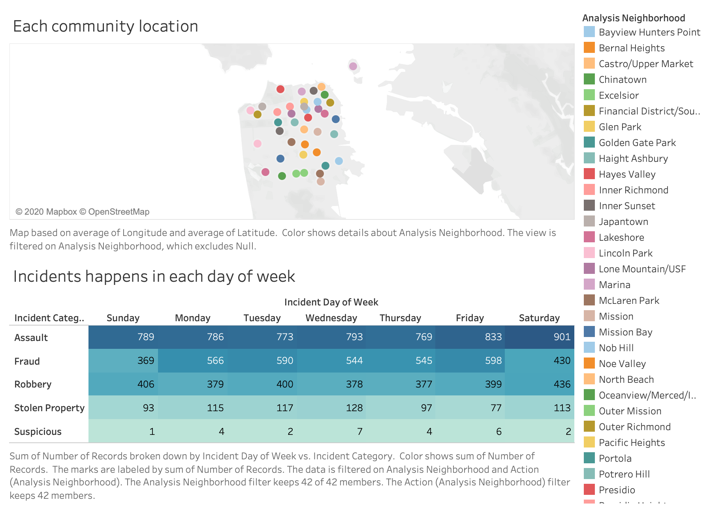
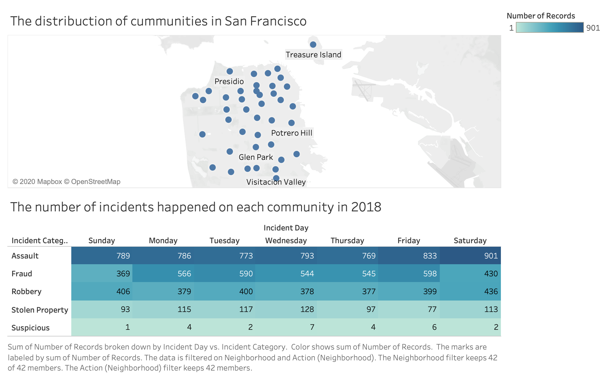

Question: Which community has less violence incidents happened in 2018?
Answer: Lincoln Park
Final Alpha Release
Final Beta Release
Final Release
Peer review FeedBack
Accoring to the feedback from student in class and professor, I am showing the community district in map rather than showing the police district and using the heatMap as auxiliary chart replace the bar chart to present the information of incidents happened on the community. I did not color each nodes which represents each community because I want to make sure the map is neat and clearn for users to see